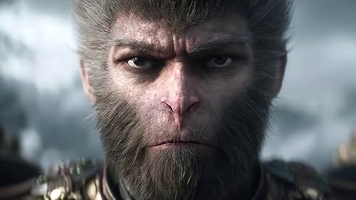

I hope to become more proficient all aspects of web dev in this class. I want to make different kinds of websites from games to my own for my resume. I hope this class helps me become more proficient in the general web dev proccesses so I can do these things in the future.
